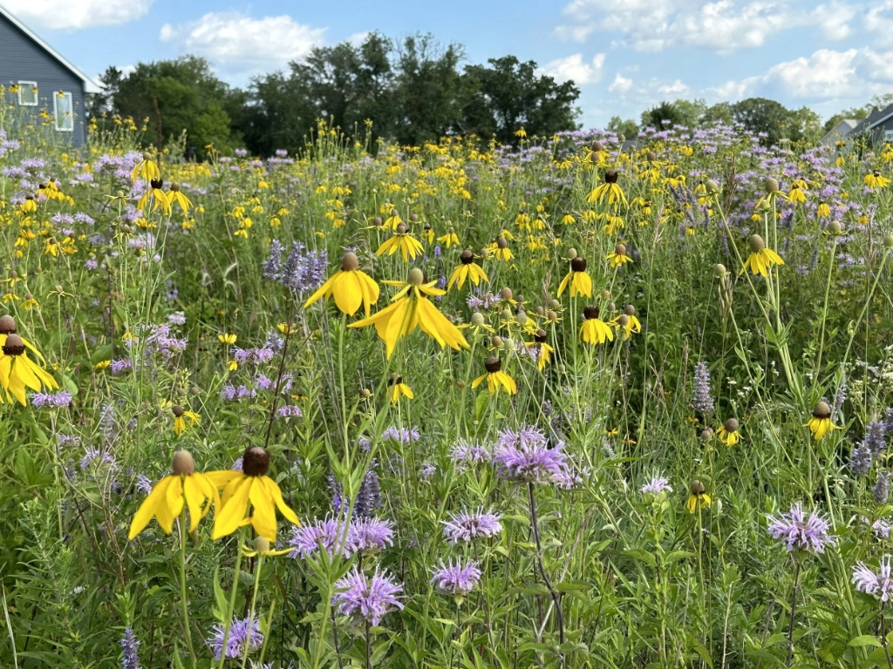
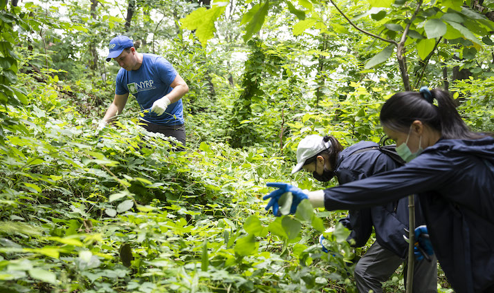
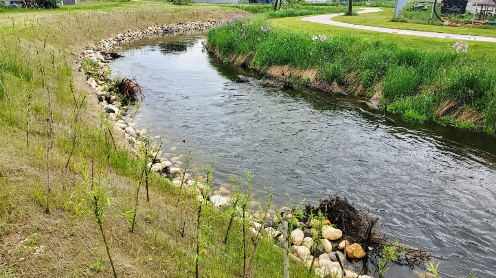
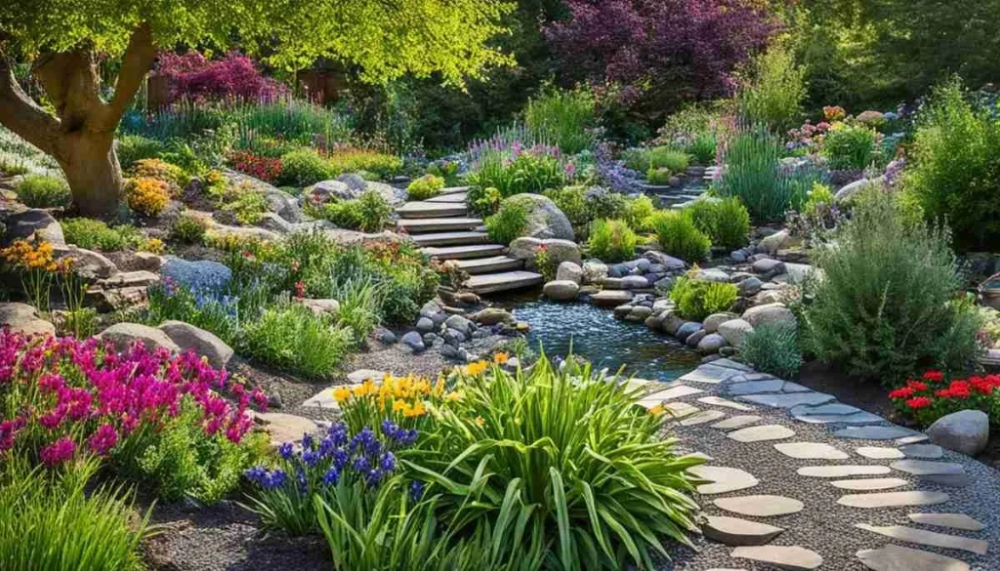
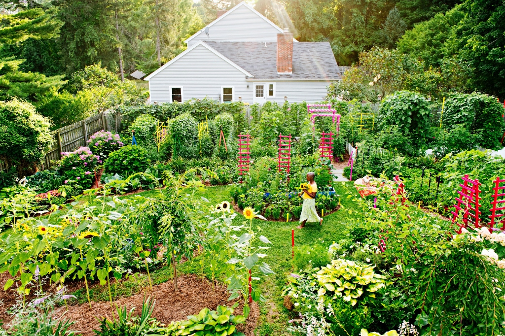
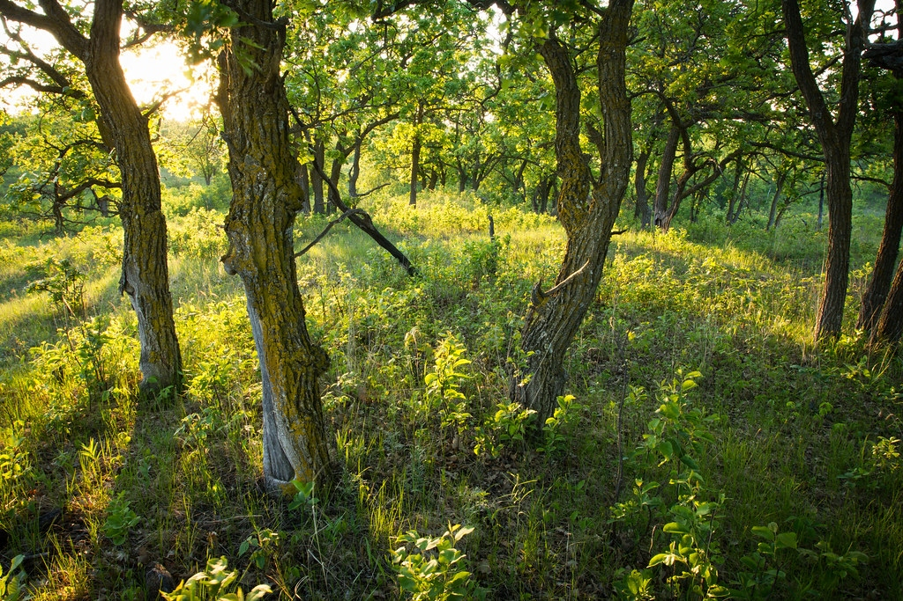

Ecological Habitat Restoration
Science-backed landscape restoration, native seed drills, invasive vegetation replacement, and ongoing stewardship for biodiverse living properties.
Specialized Restoration Services
Comprehensive ecological contracting designed to restore natural ecosystem processes and regional biodiversity.

Prairie & MeadowNative Meadow Restoration
Converting high-input lawns and degraded agricultural fields into self-sustaining native meadows rich in deep-rooted grasses and nectar forbs.
Pollinator Habitat Creation
Engineering continuous April-to-November bloom sequences with targeted larval host plants for monarch butterflies and native solitary bees.

Forest & SavannaWoodland & Understory Renewal
Rebuilding suppressed forest floors by removing invasive buckthorn, restoring living mycorrhizal mycelium, and planting native shade ephemerals.

Riparian & HydricWetland & Stream Stabilization
Bio-stabilizing fragile creek banks, detention ponds, and drainage corridors with deep-rooting emergent sedges, live stakes, and coir logs.

Living EstatesRegenerative Eco-Landscaping
Translating native ecology into structured landscape architecture. Replacing lawns with matrix sedge carpets, bioswales, and gravel borders.

Municipal PermitsPlanting Plans & Bio-Permits
Architectural-grade botanical specifications, GIS density matrices, and regulatory compliance documents for conservation commissions.
The Restoration Timeline
A disciplined multi-stage protocol ensuring lasting perennial establishment without weed reversion.
Site & Soil Diagnostic
On-site soil coring, hydrology profiling, and seed bank analysis to map baseline reference conditions.
Eco-Type Formulation
Formulating custom PLS seed matrices genetically matched within 150 miles to slope and moisture.
Seedbed Solarization
Thermal solarization and shallow cultivating to exhaust invasive weed seed banks without chemicals.
Precision No-Till Seeding
Truax no-till seed drilling and deep-cell plug installation with cultipacking rollers for optimal soil contact.
Root Crown High-Mowing
Timed high-mowing above 8 inches to suppress annual weeds while sunlight fuels deep perennial taproots.
Closed Canopy Equilibrium
Dense interlocking native root networks achieve full canopy closure, naturally resisting weed reinvasion.
Project Profiles & Ecological Outcomes
Representative restoration projects illustrating our site preparation methods and measured outcomes.

Blue Heron Stormwater Wetland
Converted an eroded, algae-clogged stormwater detention basin into a functional freshwater marsh wetland. Installed 3,200 native emergent plugs including Iris versicolor, Carex comosa, and Cephalanthus occidentalis.
- 92% reduction in suspended solids discharged into downstream creek.
- Successful breeding of green herons, red-winged blackbirds, and tree swallows.
- Zero chemical treatments required for algae suppression post-establishment.

Oak Savanna Understory Renewal
Restored 18 acres of degraded overgrown oak woods. Removed 12 acres of invasive Oriental bittersweet and Japanese barberry, then interseeded a specialized light-adapted graminoid matrix.
- Rejuvenated ancient bur oak trees through root compaction alleviation.
- Documented return of red-headed woodpeckers and native wood frogs.
- Establishment of 28 native understory wildflower species.